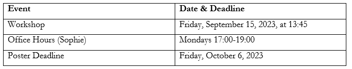
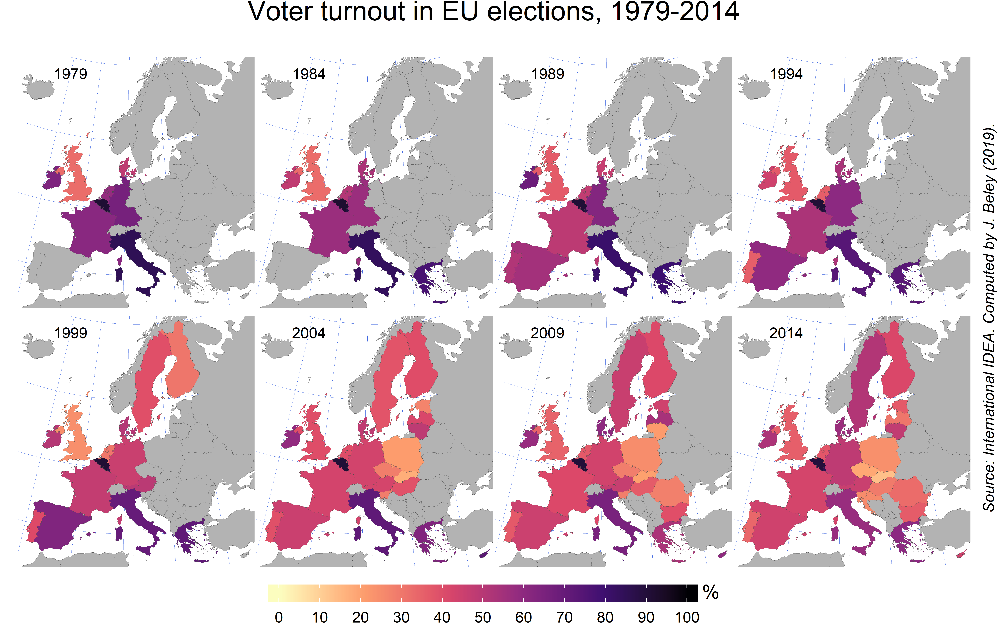
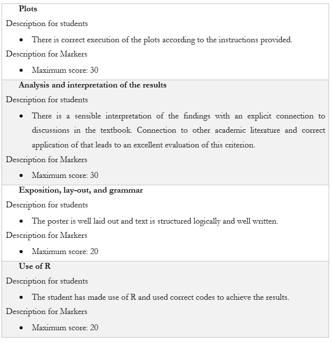

SSCPOLI302
European Union Politics
Fall 2023
Introduction
This page collects materials for the data-driven Poster assignment in the Fall 2023 edition of European Union Politics at UCR. You can also access the related files directly on Github.
Data Center office hours take place with Sophie on Mondays 17:00-19:00 in the Data Center office in Anne (ground floor); to schedule an individual meeting, please email datacenter@ucr.nl.
Installing R
Before you attend the workshop, please download RStudio.Rstudio is free to download and install. To download R, go to cloud.r-project.org and follow the instructions on the page. To download RStudio, go to rstudio.com/products/rstudio/download, scroll down and download the file recommended for your operating system.
In case you get stuck at any point, or would like more guidance in the installation process, feel free to check out any of the following links:
Course Schedule
Assignment Instructions for the Poster
The goal of this assignment is to learn to describe, compare, and explain trends in voter turnout in EP and national parliamentary elections in two EU member states and explore the relation between turn-out and another variable that you can select yourself.
You will create the following three plots.
Plot 1: Select an EU member state and plot voter turnout in both the EP and national parliamentary over time. Gather data for your selected country from the data file provided on GitHub. To help you select a country, view this [map (SciencesPo, 2019)] provided on GitHub showing voter turnout across the EU. Visualize your findings using R. Compare your findings to the discussion on turn-out in the textbook (p.111-p.114) and interpret them in the light of the explanations given there.

Plot 2: Select an additional member state and make a line graph or bar chart that depicts the evolution of turn-out for these two countries over time. Discuss the patterns that you observe and provide possible explanations based upon the discussion in the textbook (p.111-p.114).
Plot 3: Make a scatterplot in which you depict the turn-out against a second variable of your own choosing that you can pick from World Bank, OECD or Our World in Data. Plot the voter turn-out on the y-axis and the explanatory variable on the x-axis. Label the data points by year and use different distinct colors for the two member states. Explain your choice for the explanatory variable and discuss the patterns you see as well as provide possible explanations.
Organize your findings into a poster. Examples of the graphs and supporting materials are available on the Data Science website. The Data Center is available for individual consultations about the assignment.
Data Websites
Use these three websites to find your data. Potential explanatory variables should be found through three websites: OECD, World Bank, and Our World in Data.
- OECD: https://data.oecd.org/
- Our World in Data: https://ourworldindata.org/
- The World Bank: https://data.worldbank.org/
Voter Turnout Dataset
Download this dataset from Github which includes voter turnout from national and EU parliamentary elections. The dataset contains data from the Dataset National Elections: International Institute for Democracy and Electoral Assistance (International IDEA) and Dataset EU Parliamentary Elections (Hosli et al., 2022)
Examples of Explanatory Variables
- How did the influx of refugees affect voter turnout in Italy compared to Greece between 2010-2021?
- How has GDP growth affected voter turnout in Germany compared to the Netherlands between […-….]?
- How does literacy rate affect voter turnout in…?
EU Resources
Scholarly Articles and Sources
Feel free to explore these resources to find inspiration for your plots. By clicking on “Research” or “Publications”, you can see publications related to voting in EU governing bodies.
EU News
- Human Rights Watch EU 2022 Report (overview of issues facing the EU)
- DW
- LSE, Five Charts on EU Politics
- France24
- Euronews
- Al Jazeera
- AP
- Reuters
- BBC
- Politico Europe
- Vox EU CEPR (Center for Policy Research)
- The Economist
RStudio Resources
• RGallery • R Colors Guide • Themes
Coding Videos
Watch these videos for guidance on getting to know RStudio and coding the plots necessary for the poster.
Rubric
Posters will be graded on four aspects: correct execution of the tasks, analysis of your results, correct use of R and script, and exposition/layout.

Course: SSCPOLI302 Professor: Dr. Herman Lelieveldt Duration: August-December 2023